vignettes/range_correction.Rmd
range_correction.RmdLoad bioRad
library(bioRad)## Welcome to bioRad version 0.5.0.9297## Docker daemon running, Docker functionality enabled (vol2bird version 0.5.0, MistNet available)We start with the changing properties of the radar beam as it propagates through the atmosphere. We define:
The beam height is changing as a result of earth’s curvature, and beam refraction:
# define a range grid from 0 to 200 km:
my_range <- seq(0, 200000, 1000)
# plot the beam height for each range, for a 0.5 degree elevation beam:
plot(my_range, beam_height(my_range, elev = .5), xlab = "range [m]", ylab = "beam height [m]")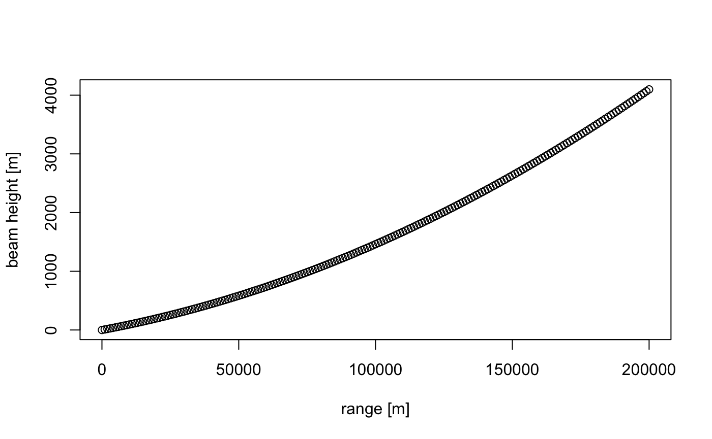
The beam width also broadens with range:
# plot the beam width, for a beam opening angle of 1 degree (typical for most weather radars):
plot(my_range, beam_width(my_range, beam_angle = 1), xlab = "range [m]", ylab = "beam width [m]")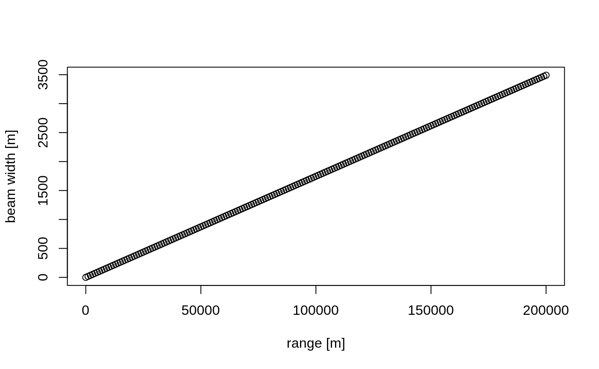
We can now combine the relations for beam width and beam height, to calculate the beam profile as a function of height, i.e. the altitudinal normalized distribution of radiated energy by the beam. Let’s plot the radiation profile for a 0.5 and 2 degree beam elevation at 50 km from the radar (the height axis runs from ground level straight up):
# plot the beam profile, for a 0.5 degree elevation beam at 50 km distance from the radar:
plot(beam_profile(height = 0:4000, 50000, 0.5), 0:4000, xlab = "normalized radiated energy", ylab = "height [m]", main = "beam elevation: 0.5 deg, distance=50km")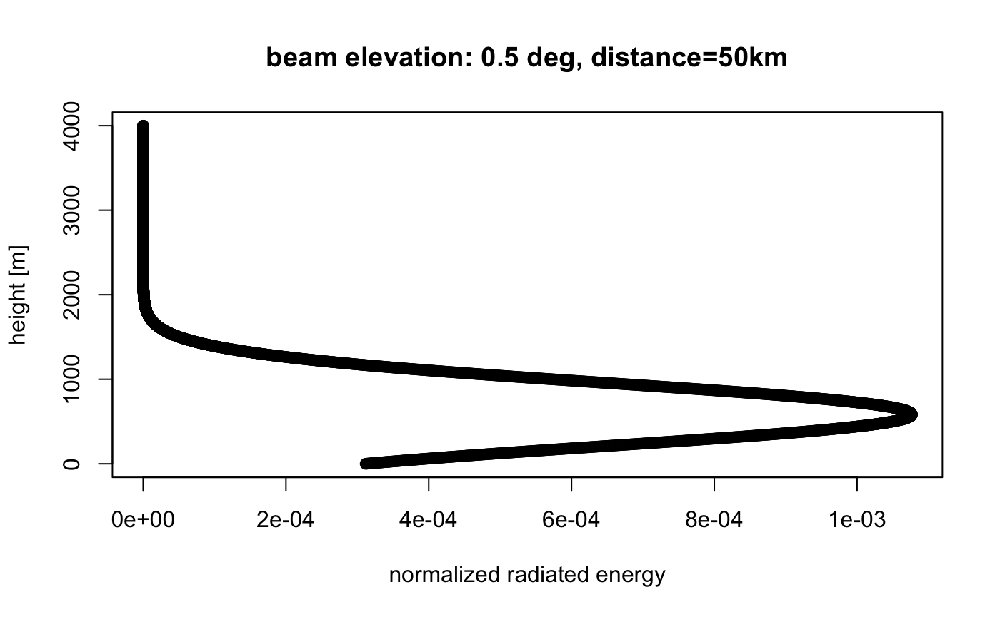
# plot the beam profile, for a 2 degree elevation beam at 50 km distance from the radar:
plot(beam_profile(height = 0:4000, 50000, 2), 0:4000, xlab = "normalized radiated energy", ylab = "height [m]", main = "beam elevation: 2 deg, distance=50km")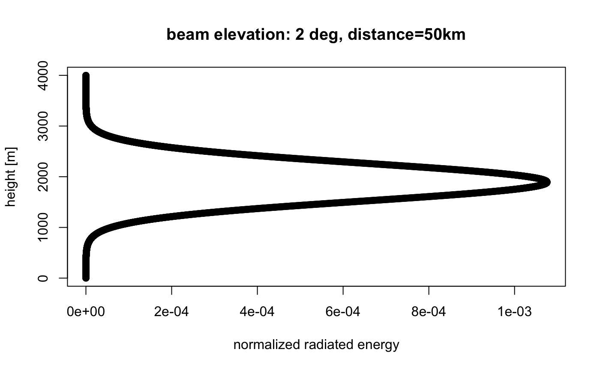
We can also calculate the normalized radiation profile for the two beams combined:
# plot the combined beam profile for a 0.5 and 2.0 degree elevation beam at 50 km distance from the radar:
plot(beam_profile(height = 0:4000, 50000, c(0.5, 2)), 0:4000, xlab = "normalized radiated energy", ylab = "height [m]", main = "beam elevations: 0.5,2 deg, distance=50km")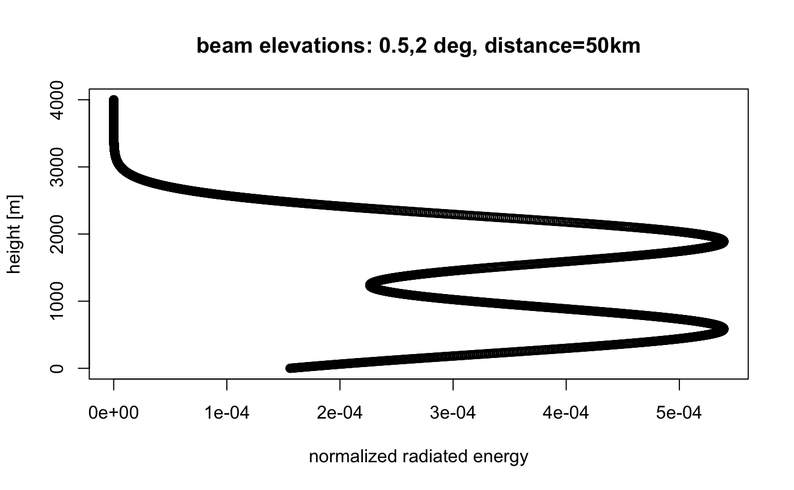
Let us now assume we have calculated a vertical profile (of birds) for a certain polar volume file. Let’s load an example
# let's load an example polar volume:
pvolfile <- system.file("extdata", "volume.h5", package = "bioRad")
example_pvol <- read_pvolfile(file = pvolfile)
# a vertical profile can also be calculated from the polar volume directly, using
# calculate_vp(pvolfile)
# but for now we will use bioRad's example vertical profile already calculated:
example_vp## Vertical profile (class vp)
##
## radar: seang
## source: WMO:02606,RAD:SE50,PLC:Angelholm,NOD:seang,ORG:82,CTY:643,CMT:Swedish radar
## nominal time: 2015-10-18 18:00:00
## generated by: vol2bird 0.3.17Let’s plot the vertical profile, for the quantity eta (the linear reflectivity):
plot(example_vp, quantity = "eta")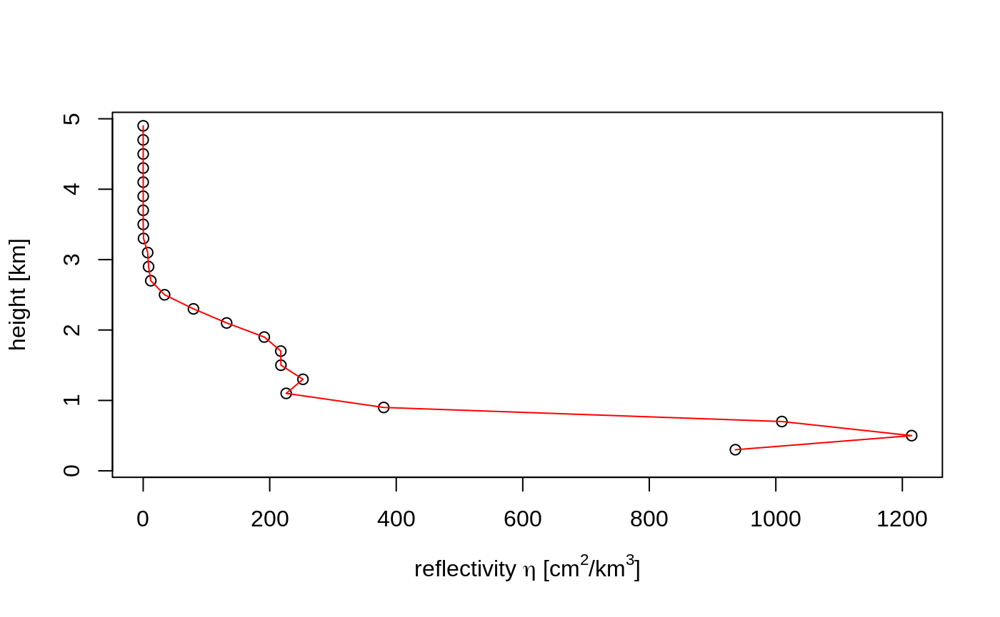
Note that eta is directly related to reflectivity factor (DBZH), i.e. a reflectivity factor of 5 dBZ amounts to the following eta at a radar wavelength of 5.3 cm:
dbz_to_eta(5, wavelength = 5.3)## [1] 1060.747Our goal is to estimate a spatial image of vertically integrated density (VID) based on all elevation scans of the radar, while accounting for the changing overlap between the radar beams as a function of range.
We start with:
beam_range()).For each scan within the polar volume we:
dbz_to_eta(DBZH) (see paragraph 3), with DBZH the reflectivity factor measured at the pixel’s distance from the radar.For each pixel on the ground, we thus end up with a set of \(eta_{expected}\) and a set of \(eta_{observed}\). From those we can calculate a correction factor at that pixel, as \(R=\sum{eta_{observed}}/\sum{eta_{expected}}\), with the sum running over scans.
To arrive at the final PPI image:
vid) and vertically integrated reflectivity (vir) for the profile, using the function integrate_profile().VID is simply the adjustment factor image (R), multiplied by the vid calculated for the profileVIR is simply the R image, multiplied by the vir calculated for the profileLet’s first make a PPI plot of the lowest uncorrected scan:
# extract the first scan from the polar volume:
my_scan <- example_pvol$scans[[1]]
# project it as a PPI on the ground:
my_ppi <- project_as_ppi(my_scan, range_max = 100000)
# plot it
plot(my_ppi)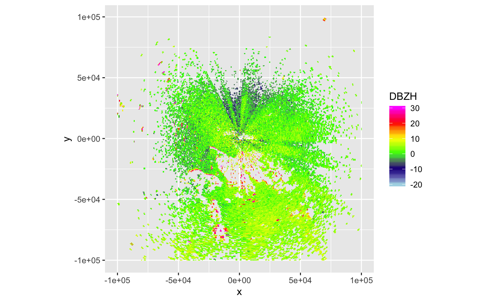
Now let’s calculate the range-corrected PPI
# let's use a 500 metre spatial grid (res), and restrict to 100x100 km area
my_corrected_ppi <- integrate_to_ppi(example_pvol, example_vp, res = 500, xlim = c(-100000, 100000), ylim = c(-100000, 100000))
my_corrected_ppi## Plan position indicator (class ppi)
##
## quantities: VIR VID R overlap eta_sum eta_sum_expected
## dims: 400 x 400 pixelsThe range corrected PPI has four parameters: VIR, VID, R, overlap. Let’s plot the adjustment factor R:
# plot the adjustment factor R:
plot(my_corrected_ppi, param = "R")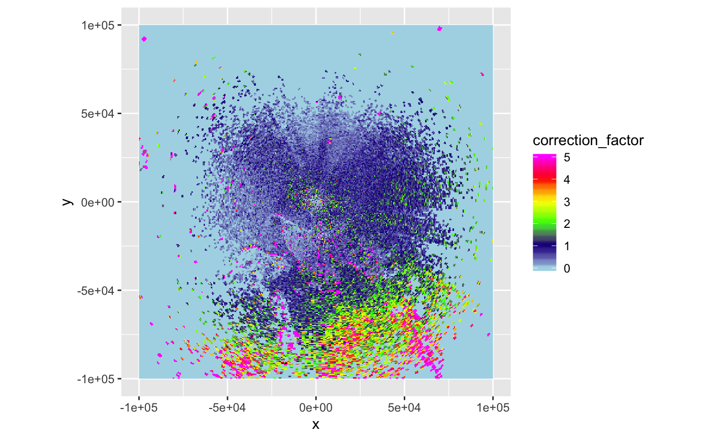
Let’s also plot the vertically integrated reflectivity:
plot(my_corrected_ppi, param = "VIR")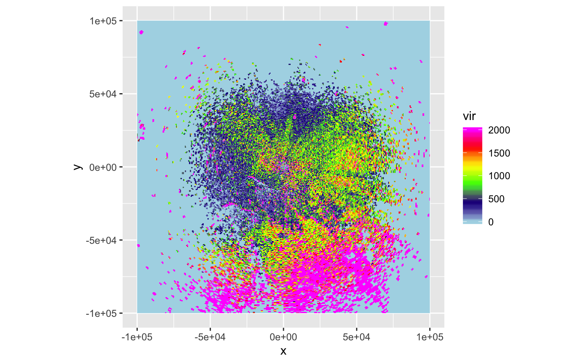
Or plot the vertically integrated density on a map:
bm <- download_basemap(my_corrected_ppi)## Downloading zoom = 8 ...## Map tiles by Stamen Design, under CC BY 3.0. Data by OpenStreetMap, under ODbL.map(my_corrected_ppi, bm, param = "VIR", alpha = .5)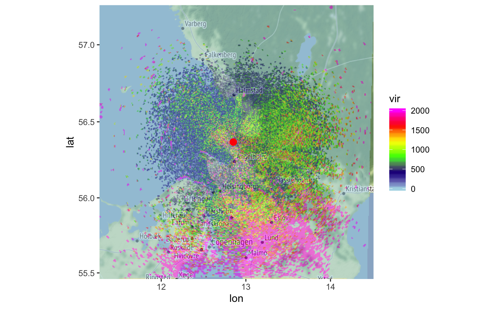
At large distances from the radar we expect correction for range effects to become more difficult:
We can calculate overlap between emitted radiation and the biological profile as follows:
# calculate overlap between vertical profile of birds
# and the vertical radiation profile emitted by the radar:
bpo <- beam_profile_overlap(example_vp, get_elevation_angles(example_pvol), seq(0, 100000, 1000), quantity = "eta")
# plot the calculated overlap:
plot(bpo)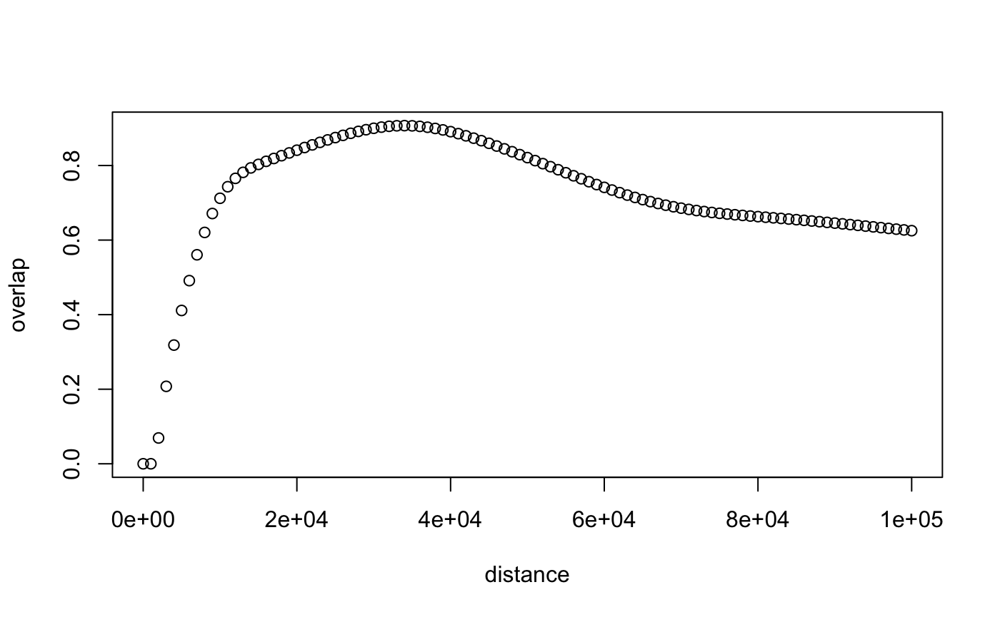
The function first normalizes the vertical profile altitudinal distribution. This can be either using profile quantity eta or dens, whichever is preferred (note that dens, the density, is sometimes thresholded to zero based on radial velocity standard deviation, see sd_vvp_threshold(), while eta is not)
It then calculates the overlap between the normalized vertical profile, and the normalized radiation profile as calculated with beam_profile(), using a metric called the Bhattacharyya distance. This metric is zero when there is no overlap, and 1 when the distributions are identical.
The range-corrected PPI also contains a field overlap, which contains the same metric but then calculated on the grid of the PPI:
plot(my_corrected_ppi, param = "overlap")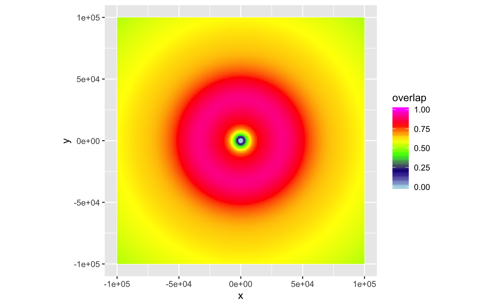
The overlap metric might be used in the future to show only certain section of the PPI, based on their overlap value.
noise_floor parameter, by which one can determine at which distance birds are expected to be below noise level, given their vertical profile. Affects function beam_profile_overlap().